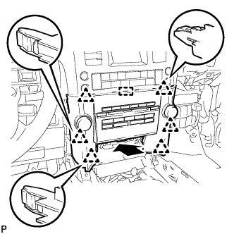
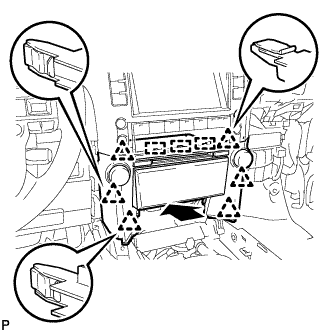
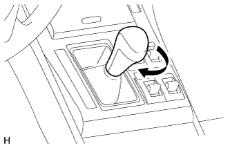

RADIO RECEIVER > INSTALLATION |
| 1. INSTALL NO. 2 RADIO BRACKET |
Install the bracket with the 3 screws.
| 2. INSTALL NO. 1 RADIO BRACKET |
Install the bracket with the 3 screws.
| 3. INSTALL LOWER CENTER INSTRUMENT CLUSTER FINISH PANEL SUB-ASSEMBLY (w/ Navigation System) |
Attach the 2 claws to install the lower center instrument cluster finish panel.
Install the 4 screws.
| 4. INSTALL RADIO RECEIVER ASSEMBLY WITH BRACKET |
w/o Navigation System:
Connect the connectors.
|  |
Insert the radio receiver to attach the 6 clips and rib on its backside.
Install the radio receiver with the 4 bolts.
w/ Navigation System:
Connect the connectors.
|  |
Insert the radio receiver to attach the 6 clips and 3 ribs on its backside.
Install the radio receiver with the 4 bolts.
| 5. INSTALL FRONT CONSOLE UPPER PANEL GARNISH |
Attach the 2 clips to install the front upper console panel garnish.
| 6. INSTALL UPPER CONSOLE PANEL SUB-ASSEMBLY |
Connect each connector.
Attach the 7 clips to install the upper console panel.
| 7. INSTALL SHIFT LEVER KNOB SUB-ASSEMBLY |
|  |
Install the shift lever knob and twist it in the direction indicated by the arrow.
| 8. INSTALL INSTRUMENT PANEL FINISH PANEL END RH |
Attach the 11 clips to install the instrument panel finish panel end.
| 9. INSTALL INSTRUMENT PANEL FINISH PANEL END LH |
Attach the 11 clips to install the instrument panel finish panel end.
| 10. CONNECT CABLE TO NEGATIVE BATTERY TERMINAL |